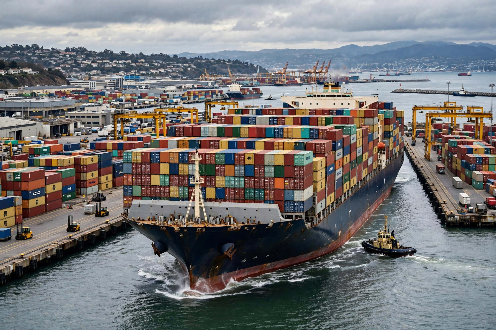

Container ship
From Wikipedia, the free encyclopedia

An ultra-large container vessel.A container ship is a cargo ship that carries all of its load in truck-size intermodal containers, in a technique called containerisation. They feed the container ports of the world trade system; the largest, in the 24,000 TEU class (e.g. the Evergreen A-class and MSC\'s newest vessels), are about 400 metres long. Container ships now carry the great majority of the world\'s non-bulk cargo by value.
History
Malcolm McLean, an American trucking entrepreneur, launched the first container ship voyage in 1956 with the converted tanker Ideal X carrying 58 containers from Newark to Houston. Standardisation of container sizes and corner fittings by ISO in the late 1960s let the system spread globally, collapsing the cost of freight — loading a ship fell from dollars per ton to cents.
Design and classes
Cellular container ships stow containers in hold cell guides and in stacks on deck, secured by lashing rods and twistlocks. Size classes include Feeder, Panamax, Post-Panamax, Neo-Panamax (for the enlarged Panama Canal locks of 2016) and Ultra Large Container Vessels over 20,000 TEU. Slow steaming since 2008 conserves fuel and cuts emissions.
Operations and incidents
Ships are worked around the clock by giant ship-to-shore gantry cranes at terminals such as Shanghai, Singapore and Rotterdam — the world\'s largest container ports. Notable incidents include the Ever Given blocking the Suez Canal for six days in 2021, and container losses in storms that periodically wash boxes ashore.